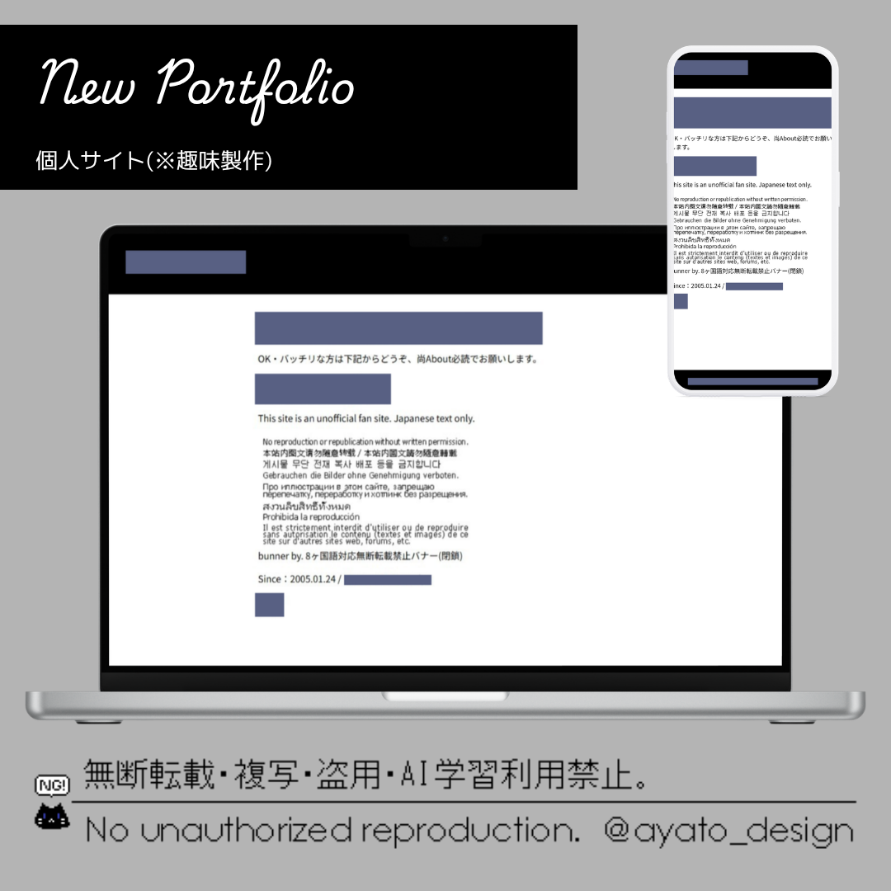
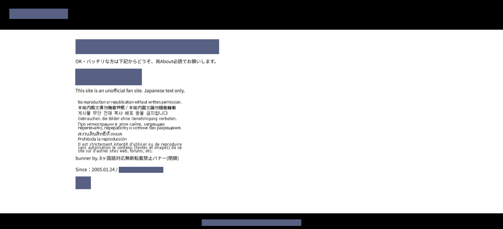
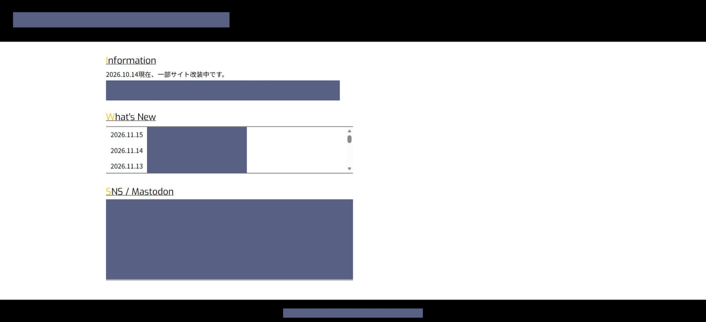
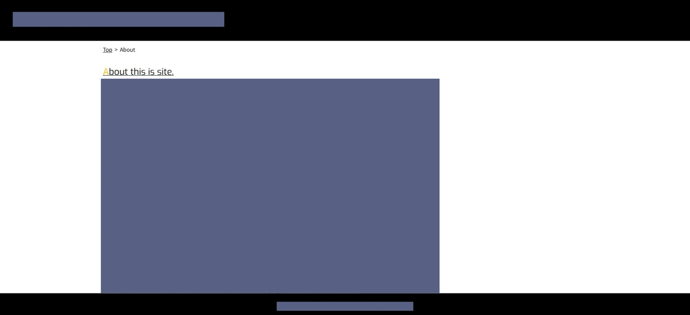

個人サイト
Tag
- Other
- Webite
趣味の範囲で20年以上運営してる個人サイト。
様々な事情から一部モザイクとURLは非公開ですが、今も全て個人で管理しています。
当時サイトの作り方を解説した本やサイトがあったので、それを片手にHTMLを打ったのは良い思い出です。
一時期流行ったホームページビルダーも導入しましたが、挫折しました(笑)
何もない所から自分で作るのが楽しいと思ったのと、サイト制作が好きな原点はこの個人サイトからだと思います。
サイトデザインはポートフォリオサイトをベースに作成。
ページ数が膨大なのと、検索避けを必要としているので敢えてインラインフレームを使って作成しています。
サイト仕様
- インラインフレーム
- レスポンシブ対応
- ハンバーガーメニュー
- 検索避け(mata/.htaccess)
使用技術
- HTML
- CSS
- JavaScript(basic)
- jQuery
- .htaccess(パスワード認証、転送など)
素材提供
- Google Fonts
- HTML5 Dotcor
- WEBデザインMATOME
- SACOCHAN-DESIGN.COM
制作時間：不明
制作ツール：Visual Studio Code/FFFTP
完成日：2005年1月～
更新履歴
- 2026.10.14 レスポンシブ化
- 2005.01.24 サイト公開